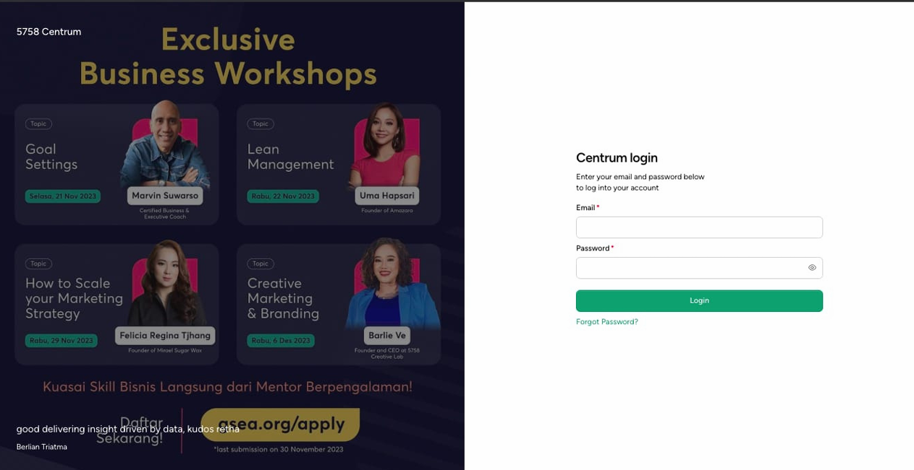
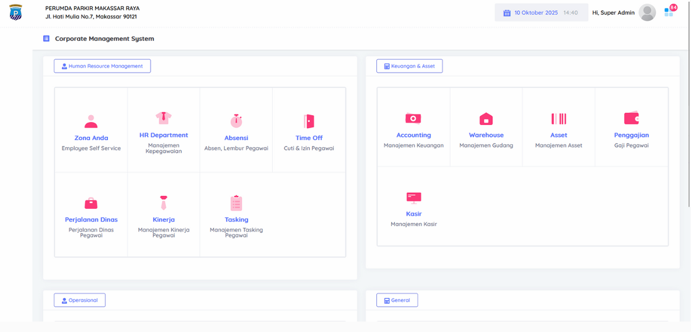
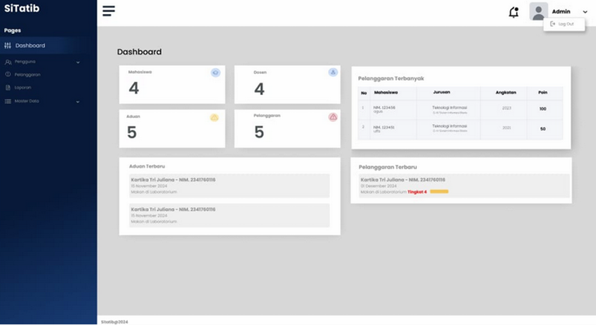
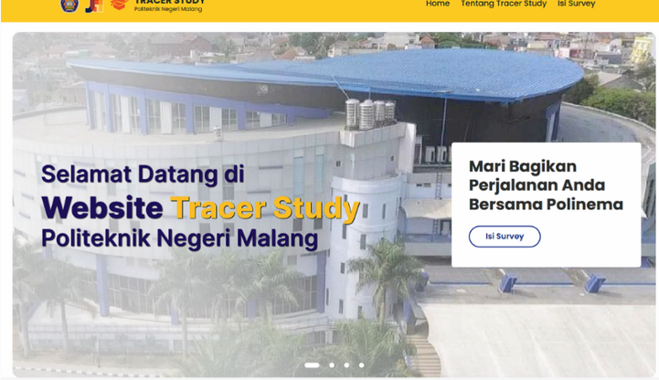
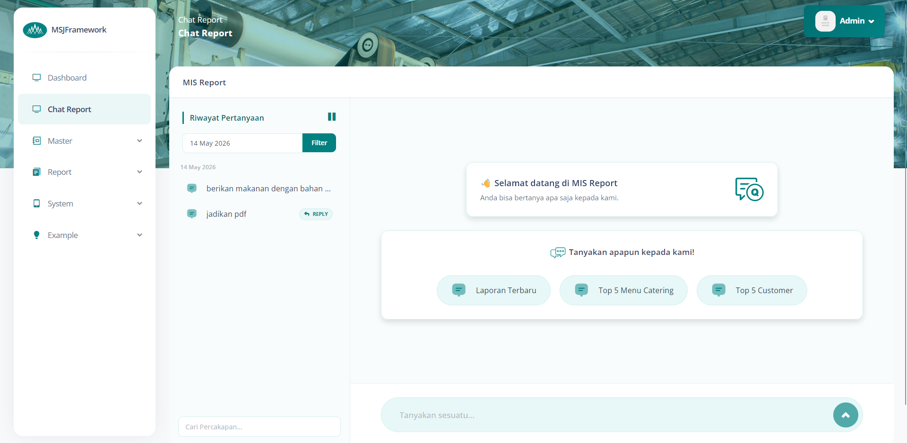

04
Business Information Systems student · Web Developer & Data Analyst
I'm a student majoring in Business Information Systems at the State Polytechnic of Malang, focused on web-based applications and data management. Alongside building Laravel projects end to end — from backend logic to system integration — I also enjoy digging into data: turning raw numbers and reviews into sentiment analysis, forecasts, and reports that are easier to act on.
Building end-to-end web systems — from database design and backend logic to user-facing interfaces — mainly with the Laravel ecosystem.
Turning raw data into clear insight — from user review sentiment to trend-based forecasting — and writing it up in a way that's easy to act on.





Details to be added.
I'm open to internship, freelance, and full-time opportunities in web development and data analysis.
Email Me